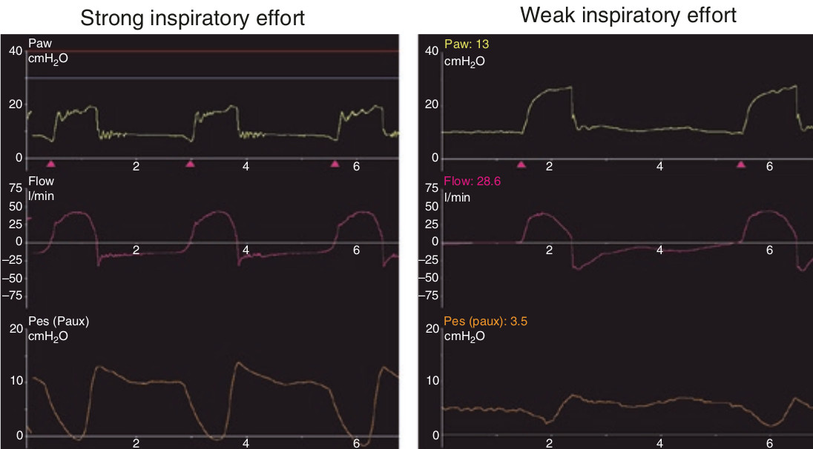

الگوی افت فشار PES با شروع تلاش دمی بیمار اطلاعاتی در مورد درایو تنفسی (میل تنفسی) و ظرفیت عصبی عضلانی در اختیار میگذارد. تلاش دمی نیرومند با کاهش بارز و تیز PES همراه است و برعکس تلاش ضعیف با افتی کم و تدریجی.

در مورد تلاش دمی بیمار کدام مورد غلط است؟
۱ - از روی الگوی افت فشار مروی قابل ارزیابی است
۲ - در هر بیمار متفاوت است
۳ - برای تنفس های مختلف در یک بیمار مقداری یکسان است
۴ - از روی میزان افت فشار مروی قابل اندازه گیری است
۵ - بستگی به درایو تنفسی دارد